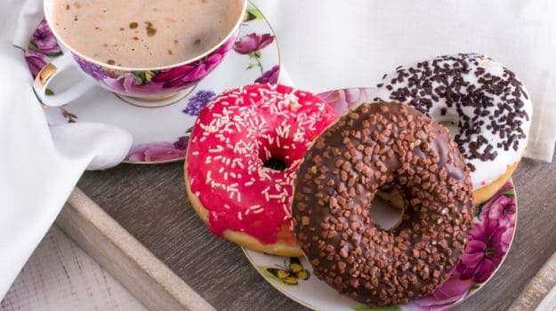
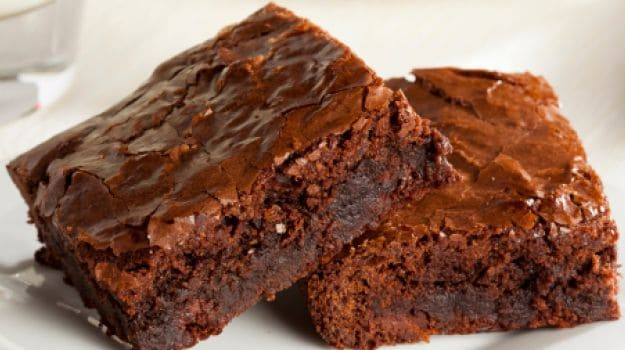
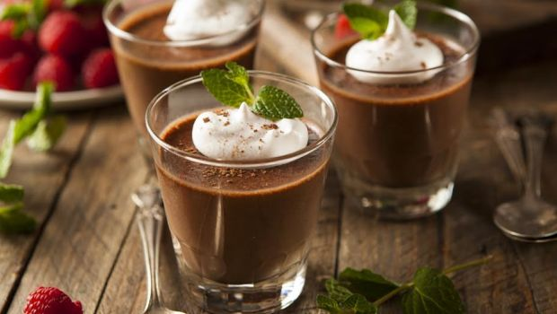

Examples of Specialized Sweet Foods
How To Make Doughnuts At Home

Best Sweet Recipes:
After indulging in a hearty meal, you're bursting at the seams but
when a lemon tart or a pretty cupcake arrives at the table - you somehow, miraculously, have room for that too.
Let's be honest: we all love desserts, and who can blame us.
If munching on something sweet and scrummy takes the edge of a not-so-great-day, you're not alone.
When a craving hits, it's nice to get exactly what you want. So when you're hankering for a slice of pie, nothing else will do.
And when you stay up all night thinking of those chocolate brownies stashed away in the fridge, you have to dig in.
How to make Fudgy Chewy Brownies

Key Ingredients:
all-purpose flour, salt, baking powder,
unsweetened chocolate, bittersweet or semisweet chocolate,
unsalted butter, sugar, vanilla extract, eggs, Optional: toasted walnuts, pecans, macadamia nuts, peanuts
How to make Guilt-Free Dark Chocolate Mousse

1.Cut the dark chocolate into pieces, put it in a bowl and melt it in a pan that fits into a bigger saucepan with simmering water.
2.Take 2 egg whites in a bowl and mix them till they become stiff, then add sugar and mix again.
3.In another small bowl take coffee, cocoa powder, Irish cream liquor and mix well.
4.Add this to the melted chocolate.
5.Now whisk the hung curd into this mixture.
6.Finally with a large steel spoon fold in the beaten egg mixture into the chocolate yogurt, a spoon at a time.
7.Be careful not to over mix at this time otherwise the mousse will lose its volume.
8.Spoon this creamy chocolate mixture into four bowls.
9.Put them into the refrigerator for a couple of hours for the mousse to set.
For the garnish:
1.Put frozen blueberries in a pan of water, add a pinch of sugar for taste and let them boil for around 15 minutes till the water reduces.
2.Garnish the mousse with the blueberry compote, dust a little icing sugar on top and serve chilled.